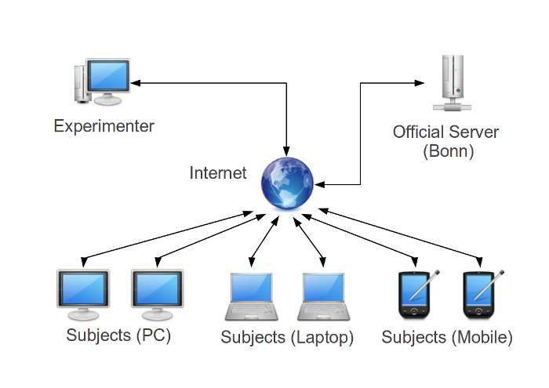

Network configuration
There are several possibilities of using the Bonn Economic System, each having its own advantages.
Using the official server

The easiest way to get going is using the official server. The advantage is that no
installation is required and the BES can be used just by entering the BES-URL in each computers' browser.
Internet experiments

It is not required for the computers used in the experiment to be in the same network.
In fact, as long as they have a connection to the internet,
computers from different networks or even countries can be in the same experiment.
Experimenter PC as server

If no internet connection is available in your laboratory, you can execute a local version of the server. You need to specify the server's adress on each client.
Server on local network

In some cases it might be advantageous to have a dedicated server.